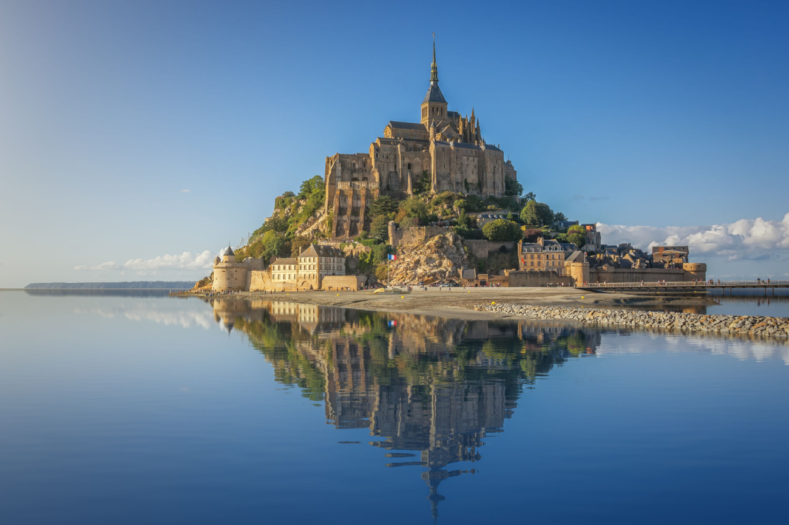
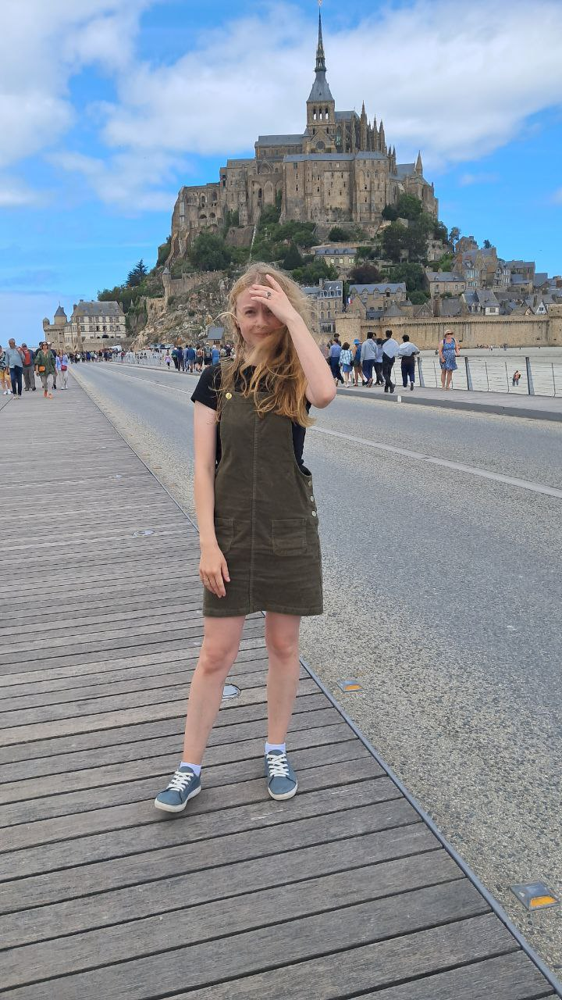
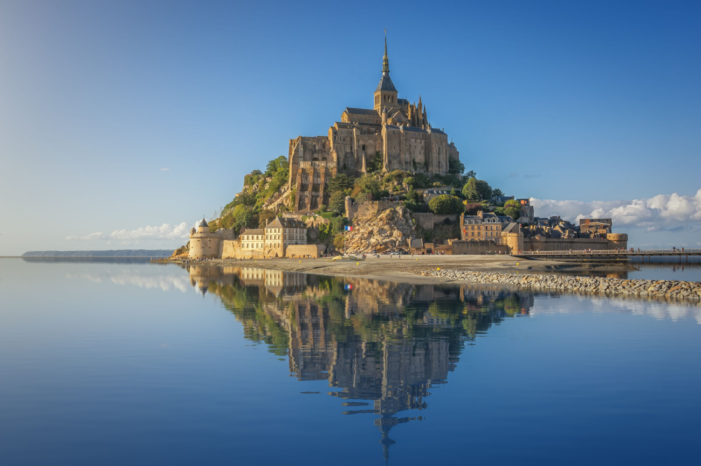
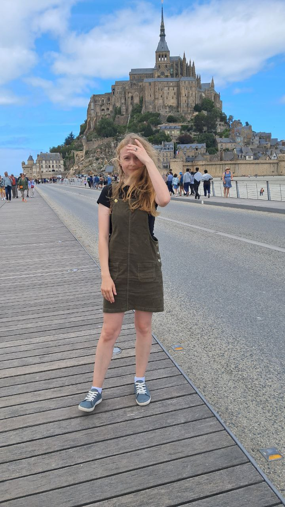

Navigation:
My favorite landmark in France
I've been living in France for three years now. Before moving to this country, it wasn't one of my favorites, and I definitely wouldn't have wanted to live here. But over time, traveling around France, I really grew to love it. That's why I want to talk about one of the most beautiful and amazing landmarks in the world.
Mont Saint-Michel: A Historic Marvel
Mont Saint-Michel, often called the "Wonder of the West" and a UNESCO World Heritage site, has been a pilgrimage destination since the Middle Ages, drawing tourists from across the globe to this day. The island, named after the Archangel Michael, began its history in 708 AD. Today, it's the most visited attraction in France. Rising from the heart of a bay captivating in its natural beauty, Mont Saint-Michel enchants with the majestic silhouette of its abbey, perched atop this rocky island, and its walled medieval town.
Exploring the Town
You can enter the town through fortified gates that lead to Grand Rue, where you'll find ancient granite houses, museums, and souvenir shops. This lively street is also home to the famous La Mère Poulard restaurant, where you can savor their renowned specialty omelet. Grand Rue leads uphill to the abbey, which you can access by climbing the Grand Degré staircase.
The Abbey: An Architectural Masterpiece
The Benedictine monastery of Mont Saint-Michel, crowned with a majestic spire, impresses with its multifaceted architecture, spanning the 11th to 16th centuries. The 11th-century Romanesque abbey church, the monks' promenade, the "Merveille" complex (an architectural ensemble of six halls spread across three levels, with a refectory on the top floor), the guest hall, the chaplains' room, the cloister, the knights' hall, and the cellar — all contribute to making Mont Saint-Michel a true monument of religious art.
Breathtaking Views
After your tours, you simply must stroll along the pedestrian path at the lower part of the abbey. From there, you'll get stunning views of the medieval town and the surrounding bay.
Learn more Mont Saint-Michel
 


